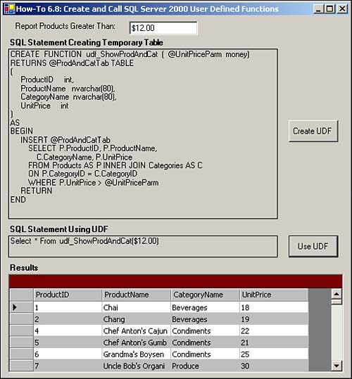

Note
Although this return value has been called ProdAndCatTab, there is not going to be a table that you can access outside the function by that name. It will just be strictly for use in the calling statement. |
In SQL Server 2000, I have heard that you can create user-defined functions (UDFs). Where would you use UDFs, and how do you create and call them from within T-SQL?
UDFs have been used for years in application development languages. You can now create them in SQL Server 2000 as well.
You can create UDFs in SQL Server 2000 by using the CREATE FUNCTION command. Normally, you would do this using the Enterprise Manager or some tool, but here you will learn how to do it using VB.NET. Following is the function that will be created:
CREATE FUNCTION udf_ShowProdAndCat (@UnitPriceParm money)
RETURNS @ProdAndCatTab TABLE
(
ProductID int,
ProductName nvarchar(80),
CategoryName nvarchar(80),
UnitPrice int
)
AS
BEGIN
INSERT @ProdAndCatTab
SELECT P.ProductID, P.ProductName,
C.CategoryName, P.UnitPrice
FROM Products AS P INNER JOIN Categories AS C
ON P.CategoryID = C.CategoryID
WHERE P.UnitPrice > @UnitPriceParm
RETURN
END
This function definitely looks a lot different from functions you have created in other languages, but it doesn't look as funky when you remember you are using T-SQL commands.
The parameter that is passed starts with the @ symbol, much like local variables that were discussed in How-To 6.1.
You will also want to declare the data type.
When returning values from a UDF, you will either pass back a scalar type, which is actually a single value of one of the standard data types, or pass back a new Table data type.
The example for this How-To creates and returns a Table data type, specified with the following lines of code:
RETURNS @ProdAndCatTab TABLE
(
ProductID int,
ProductName nvarchar(80),
CategoryName nvarchar(80),
UnitPrice int
)
By including the opening and closing parentheses, you can specify and return an entire table's worth of data, but be careful not to because performance would not be good. This is the same as it would be using SQL Server data.
You can then use this table that is returned in another T-SQL statement.
After establishing the return value, in this case the table ProdAndCatTab, you need to create the body of code for the UDF.
Note
Although this return value has been called ProdAndCatTab, there is not going to be a table that you can access outside the function by that name. It will just be strictly for use in the calling statement. |
You can see from the block of code that follows that you need to have a BEGIN and END statement:
AS
BEGIN
INSERT @ProdAndCatTab
SELECT P.ProductID, P.ProductName,
C.CategoryName, P.UnitPrice
FROM Products AS P INNER JOIN Categories AS C
ON P.CategoryID = C.CategoryID
WHERE P.UnitPrice > @UnitPriceParm
RETURN
END
Notice also that you will have INSERT @ProdAndCatTab and RETURN statements in there to create the Table return value. The rest of the code is much the same as other T-SQL statements.
You can call UDFs from other T-SQL Statements, as displayed here for this How-To:
Select * From udf_ShowProdAndCat(" & Me.txtUnitPrice.Text & ")"
There, the UDF is called in a SELECT statement, and the parameter is passed.
Open and run the VB.NET -Chapter 6 solution. From the main form, click on the button with the caption How-To 6.8 (see Figure 6.9).

You will see the UDF described in the "Technique" section in a label. Click the button labeled Create UDF. If the UDF already exists, then a message box will tell you so. Otherwise, the UDF is created. Next, click the button labeled Use UDF. The data grid is then filled and the data is displayed. You can change the value in the Products Greater Than text box. Then click Use UDF again to see the new data displayed.
Create a Windows Form. Then place the controls listed in Table 6.8 with the following properties set, as displayed in Figure 6.9.
|
Object |
Property |
Setting |
|---|---|---|
|
Label |
Text |
Report Products Greater Than: |
|
TextBox |
Name |
txtUnitPrice |
|
Label |
Text |
SQL Statement Creating Temporary Table |
|
Label |
Name |
lblCreateUDF |
|
Button |
Name |
btnCreateUDF |
|
Text |
Create UDF |
|
|
Label |
Text |
SQL Statement Using UDF |
|
Label |
Name |
lblUseUDF |
|
Button |
Name |
btnUseUDF |
|
Text |
Use UDF |
|
|
Label |
Text |
Results |
|
DataGrid |
Name |
dgResults |
Add the code in Listing 6.18 to the Load event of the form. (Double-click on the form to bring up the code.)
Private Sub frmHowTo6_8_Load(ByVal sender As System.Object,
ByVal e As System.EventArgs) Handles MyBase.Load
'-- Create the UDF string
Dim strSQL As String
strSQL = "CREATE FUNCTION udf_ShowProdAndCat ( @UnitPriceParm money)"
strSQL &= "RETURNS @ProdAndCatTab TABLE" & vbCrLf
strSQL &= "(" & vbCrLf
strSQL &= " ProductID int," & vbCrLf
strSQL &= " ProductName nvarchar(80)," & vbCrLf
strSQL &= " CategoryName nvarchar(80)," & vbCrLf
strSQL &= " UnitPrice int" & vbCrLf
strSQL &= ")" & vbCrLf
strSQL &= "AS" & vbCrLf
strSQL &= "BEGIN" & vbCrLf
strSQL &= " INSERT @ProdAndCatTab" & vbCrLf
strSQL &= " SELECT P.ProductID, P.ProductName," & vbCrLf
strSQL &= " C.CategoryName, P.UnitPrice" & vbCrLf
strSQL &= " FROM Products AS P INNER JOIN Categories AS C" & _
vbCrLf
strSQL &= " ON P.CategoryID = C.CategoryID" & vbCrLf
strSQL &= " WHERE P.UnitPrice > @UnitPriceParm" & vbCrLf
strSQL &= " RETURN" & vbCrLf
strSQL &= "END"
Me.lblCreateUDF.Text = strSQL
'-- Create the SQL string that calls the UDF
Me.lblUseUDF.Text = "Select * From udf_ShowProdAndCat(" & _
Me.txtUnitPrice.Text & ")"
End Sub
Add the code in Listing 6.19 to the Click event of btnCreateUDF. This code uses Connection and Command objects to create the UDF based on the code that is provided.
Private Sub btnCreateUDF_Click(ByVal sender As System.Object,
ByVal e As System.EventArgs) Handles btnCreateUDF.Click
Try
Dim ocnn As New OleDb.OleDbConnection(BuildCnnStr("(local)", _
"Northwind"))
Dim ocmd As New OleDb.OleDbCommand(Me.lblCreateUDF.Text)
ocmd.Connection = ocnn
ocnn.Open()
ocmd.ExecuteNonQuery()
ocnn.Close()
Catch excp As Exception
MessageBox.Show(excp.Message)
Exit Sub
End Try
MessageBox.Show("UDF Created")
End Sub
Add the code in Listing 6.20 to the TextChanged event of the button txtUnitPrice.
Private Sub txtUnitPrice_TextChanged(ByVal sender As System.Object,
ByVal e As System.EventArgs) Handles txtUnitPrice.TextChanged
Me.lblUseUDF.Text = "Select * From udf_ShowProdAndCat(" & _
Me.txtUnitPrice.Text & ")"
End Sub
Add the code in Listing 6.21 to the Click event of the button btnUseUDF. This code fills a dataset based on the SELECT statement that calls the UDF. The code then assigns the dataset to the DataSource property of dgResults.
Private Sub btnUseUDF_Click(ByVal sender As System.Object,
ByVal e As System.EventArgs) Handles btnUseUDF.Click
Dim dtResults As New DataTable()
Try
'-- Use the SQL String to build the data adapter
' and fill the data table.
Dim odaResults As New OleDb.OleDbDataAdapter(Me.lblUseUDF.Text,
BuildCnnStr("(local)", "Northwind"))
odaResults.Fill(dtResults)
Catch excp As Exception
MessageBox.Show(excp.Message)
Exit Sub
End Try
'-- Assign the data table to the data grid's DataSource property.
Me.dgResults.DataSource = dtResults
End Sub
When you have to use the same T-SQL statements repeatedly, it is handy to be able to store that code somewhere, just like you can do with UDFs you create in Visual Basic.
When using UDFs, you can use the value inline and save a number of steps when creating your T-SQL routines.